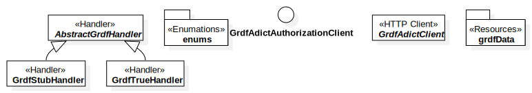

grdf
UMLPackage
«Data Provider System»
S2G-MT
::
S2G-MT-Services
::
net
::
atos
::
s2g
::
mt
::
services
::
dpsConnect
::
«Data Provider System»grdf
Description
none
Diagrams

Overview
Properties
Name
Value
name
grdf
stereotype
Data Provider System
visibility
public
importedElements
Dependencies
«Response»DpsResponse
«Factory»DpsHandlerFactory
«Handler»AbstractDpsHandler
«Consumption Interval»DsoConsumptionInterval
«Service»DpsErrorService
Relationships
(grdf→DpsResponse)
(grdf→DpsHandlerFactory)
(grdf→AbstractDpsHandler)
(grdf→DsoConsumptionInterval)
(grdf→DpsErrorService)
Owned Elements
«Handler»AbstractGrdfHandler
«Enumations»enums
GrdfAdictAuthorizationClient
«HTTP Client»GrdfAdictClient
«Resources»grdfData
«Handler»GrdfStubHandler
«Handler»GrdfTrueHandler
Overview
(grdf→DpsResponse)
(grdf→DpsHandlerFactory)
(grdf→AbstractDpsHandler)
(grdf→DsoConsumptionInterval)
(grdf→DpsErrorService)